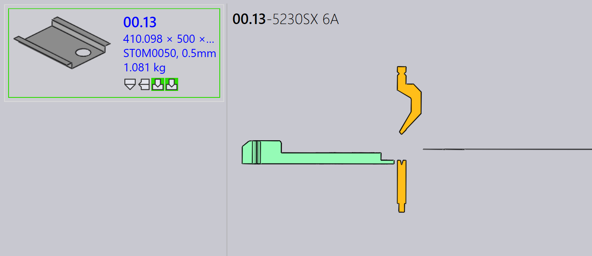
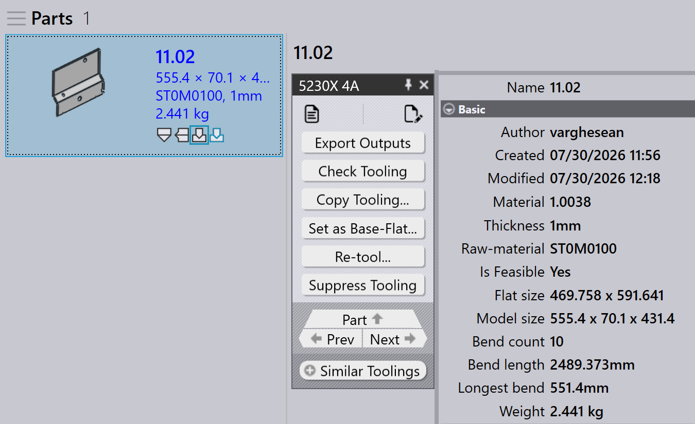

Felszerszámozási panel
Ez a szakasz a felszerszámozással kapcsolatos műveleteket ismerteti, például Export outputs, Check Tooling, Suppress Tooling, Set as Base-Flat…, Copy Tooling, és más lehetőségeket, amelyeket a felszerszámozási példányok kezelésére használnak.

|
|
Export Outputs
Ez a lehetőség exportálja az alkatrész kimenetét a Factory Settings menüben konfigurált célhelyre. (Lásd a Bend Settings és Cut Settings oldalt.)
Csak a kiválasztott felszerszámozási művelethez kapcsolódó felszerszámozások kerülnek exportálásra, nem a teljes alkatrész.
| Az exportált fájlok a művelet típusától függenek. A Hajlítás és Falc műveletek esetében NC-fájlok és jelentések jönnek létre. A Vágás és Stancolás műveletek esetében csak az alkatrészfájlok kerülnek exportálásra. |
Check Tooling
-
Ha változás történik a CAM-beállításokban, vagy egy hajlítószerszám elveszik, nem kell újrafelszerszámoznia az alkatrészt.
-
Ehelyett használja a Felszerszámozás ellenőrzése funkciót a meglévő felszerszámozás ellenőrzéséhez bármilyen módosítás nélkül.
-
Ha az ellenőrzés sikertelen, az adott példány felszerszámozási állapota frissül, és a kapcsolódó kimeneti fájlok eltávolításra kerülnek.
-
A Felszerszámozás ellenőrzése azokat az alkatrészeket is észleli, ahol a hibákat korábban manuálisan felülbírálták az Ignore Errors segítségével, és szükség esetén hibára frissíti azok állapotát.
Copy tooling
A felszerszámozás másolása lehetővé teszi a hajlítási felszerszámozás gyors alkalmazását az egyik megoldásról a többire, időt és erőfeszítést takarítva meg.
Ez átmásolja a stancoló-, sorrend- és hátsóütköző-beállítást egy kiválasztott referencia-felszerszámozásból (megoldásból), és megpróbálja ugyanazokat a beállításokat alkalmazni az összes többi megoldásra.
-
Ha a másolt beállítás kivitelezhető egy célgép esetében, akkor mentésre és felhasználásra kerül.
-
Ha a beállítás nem kivitelezhető, az adott gép eredeti felszerszámozása változatlan marad.
Előfordulhat például, hogy különböző gépekhez eltérő felszerszámozása van:
-
Itt az 5230X 4A gép hattyúnyak stancolót, az 5230SX 6A gép hegyes stancolót használ.

Amikor a Copy Tooling… funkciót használja az 5230X 4A gépen, az megpróbálja átmásolni a hattyúnyak-beállítást az összes többi gépre.

Ugyanazok a stancoló-, sorrend- és hátsóütköző-beállítások kerülnek alkalmazásra, ahol csak lehetséges. Ha a másolt beállítás nem használható, az eredeti felszerszámozás változatlan marad.

A felszerszámozás másolásának alkalmazása után a hattyúnyak-beállítás sikeresen alkalmazásra került az összes többi gépen, ahol az kivitelezhető.
Set as Base-Flat…
A Set as Base-Flat… funkció meghatározza, hogy melyik hajlítási vagy falcolási felszerszámozás legyen a referencia-teríték-méret a vágási megoldások létrehozásához. Amikor egy felszerszámozás Base-Flatként van megjelölve, a TruSmartCAM frissíti az alkatrész teríték-méretét az adott gép alapján, és ennek megfelelően újragenerálja a vágási megoldásokat. A Base-Flat felszerszámozások kék szegéllyel jelennek meg a felhasználói felületen.
A különböző hajlítógépek kismértékű eltéréseket eredményezhetnek a teríték-méretben ugyanazon alkatrész esetében. Amikor egy felszerszámozást Base-Flatként állít be, a TruSmartCAM az adott gép teríték-méretét használja fő referenciaként, és automatikusan újraszámolja a vágási megoldásokat.
Itt különböző teríték-méreteket láthatunk ugyanazon alkatrészhez a különböző gépeken:

Ebben a példában az 5230X 4A felszerszámozás van Base-Flatként beállítva, és a frissített teríték-méret alkalmazásra kerül az alkatrész tulajdonságaiban:

Automatikus teríték-alap kiválasztása
Amikor a Apply flat correction during bending gyári beállítás engedélyezve van:

-
A TruSmartCAM automatikusan beállítja azt a hajlítási felszerszámozást (amely a maximális hajlítási hossz táblázatot tartalmazza) Base-Flatként az alkatrész importálásakor.
-
Ha a kiválasztott hajlítási felszerszámozás hibába ütközik, vagy nem kivitelezhető, a TruSmartCAM intelligensen átvált, és egy másik érvényes hajlítási felszerszámozást állít be Base-Flatként. Ez biztosítja, hogy a teríték-méret referenciája és a vágási megoldások mindig következetesek és érvényesek maradjanak manuális beavatkozás nélkül.
Továbbfejlesztett teríték-alap kezelés
A TruSmartCAM Base-Flat lehetőségeket kínál a Save to Praxis párbeszédablakban a hajlítási vagy falcolási felszerszámozás szerkesztéseinek mentésekor. Ezek a lehetőségek csak az OK állapotú felszerszámozások esetében jelennek meg, és biztosítják, hogy a teríték-méret és a vágási megoldások pontosak maradjanak.
Set as Base-Flat and calculate cutting solution
Ez a lehetőség egy felszerszámozás első alkalommal történő Base-Flatként való megjelölésére és a megfelelő vágási megoldás automatikus létrehozására szolgál.
Akkor jelenik meg, amikor:
-
A felszerszámozás jelenleg nincs Base-Flatként megjelölve.
-
A felhasználó kijelölte szerkesztésre a felszerszámozást, és menti a módosításokat.

E lehetőség használatához jelölje ki a hajlítási vagy falcolási felszerszámozást, és végezze el a szükséges módosításokat, például a hajlítási paraméterek vagy a teríték-méret módosítását. A módosítások mentéséhez nyomja meg a Ctrl+S billentyűket. A Save to Praxis párbeszédablakban válassza a Set as Base-Flat and calculate cutting solution lehetőséget, és kattintson az OK gombra. A TruSmartCAM beállítja a felszerszámozást Base-Flatként, és létrehozza a vágási megoldást a frissített teríték-méret felhasználásával.
Update the base-flat and re-calculate cutting solution
Ez a lehetőség akkor használatos, amikor a felszerszámozás már Base-Flatként van megjelölve, és szerkesztették, ami szükségessé teszi a teríték-méret és a vágási megoldások újragenerálását.
Akkor jelenik meg, amikor:
-
A felszerszámozás már Base-Flatként van megjelölve.
-
A felhasználó kijelölte, szerkesztette, és menti a módosításokat.

A meglévő Base-Flat felszerszámozás szerkesztésekor frissítse a hajlítási paramétereket vagy a teríték-méret geometriáját szükség szerint. A Save to Praxis párbeszédablakban válassza a Update the base-flat and re-calculate cutting solution lehetőséget. A TruSmartCAM ezután frissíti a Base-Flat felszerszámozást, és újragenerálja az összes kapcsolódó vágási megoldást a legújabb módosítások tükrözéséhez.
|
Egyszerre csak egy hajlítási felszerszámozás állítható be Base-Flatként. Amikor a Base-Flat megváltozik, a meglévő vágási megoldások automatikusan újrafeldolgozásra kerülnek. Ez a funkció mind a hajlítási, mind a falcolási felszerszámozásoknál elérhető a TruSmartCAM alkalmazásban. |
Re-tool
Ez a lehetőség újrafeldolgozza a kiválasztott felszerszámozást az alkatrészhez.
Kattintson a jobb gombbal a kívánt felszerszámozásra a Felszerszámozási panelen, és kattintson a Re-tool… elemre.
A folytatás előtt megjelenik egy megerősítő párbeszédablak.

Kattintson az Yes gombra az újrafelszerszámozás folytatásához, vagy az No gombra a művelet megszakításához.
Csak a kiválasztott felszerszámozás kerül újrafelszerszámozásra. Az alkatrészhez kapcsolódó többi felszerszámozás nem érintett. A kiválasztott felszerszámozáshoz kapcsolódó meglévő kimenetek eltávolításra és újragenerálásra kerülnek az újrafelszerszámozási folyamat során.
Használja ezt a lehetőséget, ha a felszerszámozási adatok elavultak, helytelenek, vagy ha módosítások történnek a gép- vagy felszerszámozási konfigurációkban.
Ignore errors
-
Ha egy felszerszámozott példány figyelmeztetést mutat, és Ön mégis folytatni szeretné vele, felülbírálhatja a figyelmeztetést az Ignore errors elemre kattintva.
-
Ez lehetővé teszi a rendszer számára, hogy kimeneti fájlokat exportáljon az adott példányhoz, még akkor is, ha felszerszámozási problémák voltak.
| Az Ignore Errors funkciót csak akkor használja, ha biztos benne, hogy a figyelmeztetés biztonságosan figyelmen kívül hagyható. A tényleges hibák felülbírálása gépkárosodáshoz vagy biztonsági kockázatokhoz vezethet. |
Felszerszámozás elnyomása/elnyomás feloldása
-
Ha egy gép inaktív, vagy nem szeretné, hogy egy adott alkatrészt egy adott gép dolgozzon fel, használja a Suppress Tooling funkciót, hogy kizárja az alkatrészt a táblásításból az adott gépen.
-
Az elnyomás után az egérrel a felszerszámozott példány fölé húzva egy üzenet jelenik meg, például: „A felszerszámozást elnyomta <Felhasználónév> ekkor: <Dátum és idő>”.
-
A felszerszámozás elnyomása eltávolítja az adott géphez és alkatrészhez tartozó kimeneti fájlt.
-
Használja az Unsuppress tooling funkciót az alkatrész felszerszámozási állapotának visszaállításához az adott gépen.
-
Az elnyomás feloldásakor a megfelelő kimeneti fájl ismét létrejön.